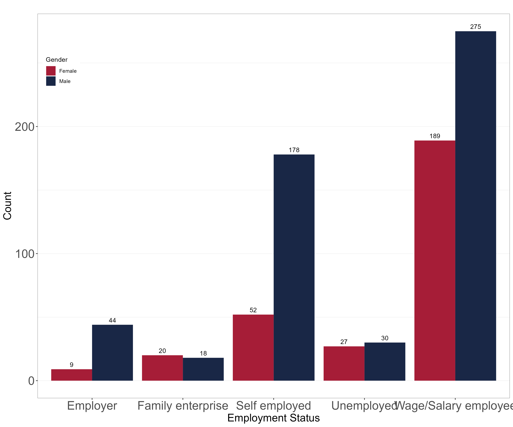

Employment choice and earnings analysis of FCT labour force: an examination of determinants and motivations.
Working paper
ABSTRACT
This study examines the factors affecting income levels, reservation income expectations, and employment sector transition choices in the Nigerian economy. We employed descriptive tables, Mincerian regression models, and multinomial logit regression models to analyze workers’ employment transition motivations and economic constraints. Data from a multipurpose survey carried out by Helpman Development Institute Garki 2, Abuja, which focused on employment sector choices, income levels, reservation wage expectations, fertility decisions, and insurance knowledge is used in this research endeavor. Finding show that majority of FCT workers plan to become employers in five years’ time. We also find that monthly living costs, educational level (specifically possessing a national diploma or higher), gender, an individual’s employment sector, and apprenticeship experience significantly influence income levels of FCT workers. The research findings also suggest that FCT workers with a Bachelor’s degrees or higher had notable reservation wage expectations, while gender did not significantly influence reservation income expectations. Our research findings also indicate that larger childhood household sizes increase the probability of transitioning into the self-employment sector from wage/salary employment and also from self-employment to employer sector. The major policy implication of our results is the need to provide a stable environment for the growth and expansion of businesses as we see that majority of FCT workers intend to become employers or self-employed workers in five years’ time, their major motivation being in search of a better room for growth and expansion.
Key words: multinomial logistic regression, income, Nigerian, transition
1 Introduction
Wage determination, as well as the various reasons for seeking to switch employment sectors has been an area of continued concern in the Nigerian labour market. We believe that by understanding the economic constraints, expectations and motivations behind future employment choices, a better understanding of the Nigerian labour market will be available for effective policy creation.
For the purpose of this paper, the Nigerian labour force is divided into 5 major groups namely; wage/salary employment, self-employment, employer, family-enterprise, and unemployed. Each of these categories has peculiarities, but income and wage inequality are common features. As a result, mobility across different jobs within and beyond the informal sector and is often pronounced, albeit with some constraints. Specific attention is laid on the prospective employment sector choices of workers by examining their motivations and constraints.
We apply descriptive tables, Mincerian regression models, and employment transition regression models in analyzing the motivations of workers’ prospective employment sector choices as well as their current economic constraints and reservation wage expectations. We find that the major factoring influences wage determination in the regression models are monthly living cost, educational level i.e., possessing a national diploma or higher, gender, employment sector, and apprenticeship experience. For the reservation wage model, we see that workers with Bachelor’s or Postgraduate degree had significant expectations while workers with national diplomas did not. As expected, gender did not have a significant effect on reservation wage expectations. The potential employment transition regressions tell us that having larger childhood household sizes increases the likelihood of transitioning from wage employment to self-employment as well as self-employment to employer sector. We also see that having apprenticeship experience strongly increases the likelihood of transitioning from wage employment to employer sector and even more so for self-employment to wage employment sector, this is a unique finding as it could be interpreted to mean that possessing apprenticeship experience makes the transition across employment sectors smoother.
The rest of the paper is made up of 5 sections. Section 2 provides an explanation of labour market groupings and important concepts used for this study. In Section 3 we explore the extant literature on wage determination, labour market dynamics, and labour market transition. Section 4 is dedicated to the description of the methodological approach and source of data used in the study. A descriptive and empirical data analysis is presented in Section 5. Finally, in Section 6 concluding remarks and policy recommendations are provided.
2 Concept clarification
Wage/salary employment: Individuals under a formal form of employment with a standard employment contract.
Self-employment; Individuals with their own enterprise/business, or individuals who work with a maximum of two other persons without any of them bearing the identity of a boss or an employer.
Employer: Individuals who have at least three (3) employees working and getting paid under them.
Family-enterprise: Individuals who work in an enterprise belonging to a family member without a standard employment contract/wage.
Unemployed: Individuals who currently don’t have any form of employment, are not under contract of receiving wage/salary and have not done any job for profit/pay in the past seven (7) days at the time of the survey.
Apprenticeship: This is defined as the participation in the learning of a crude hand-work such as; hair-dressing, tailoring, bricklaying, automobile fixing under the supervision of an experienced individual in the field. Information Communication and Technology (ICT) skills were also considered under this heading.
3 Literature review
Wage determination
Empirical literature on determinants of earnings is vast, wage determination is a complex process influenced by various factors, both individual and external. Literature has shown that socio-demographic factors such as age, sex, and education influence wage determination ( Garofalo, Agovino, et al. (2016); Guven-Lisaniler, Tuna, and Nwaka (2018); Jimoh (n.d.)). It is important to note that empirical findings had shown that the returns to education on wages can vary substantially, Thurow (1975) using 1972 data, found that 28 percent of people with university education had negative returns to education while only 24 percent had positive return. In recent studies, results have shown that female workers are even experiencing higher wage returns to education than their male counterparts Samahiya and Wirba (2023), This further speaks to the significant effect educational level has on wage determination in the modern world. Workers are concerned with the immediate quantum of disposable income ( Duncan and Hill (1989); Poole and Jenkins) and as such, wage levels play a pivotal role in deciding to switch employment sectors.
Nigerian labour market dynamics
The Nigerian labour market is characterized by heterogeneity and dualism, which are the general features of most African and developing countries’ labour markets ( Aminu; Fields (2011); Gupta (1984)). The formal labour market comprises public sector organizations and large private firms, while the informal segment is made up of micro, small, and medium-scale enterprises, petty trades, and other forms of individual economic activity. Essentially, the formal and informal sectors differ in terms of governance and regulatory framework, employment process, employees’ compensation (wage determination), and productivity. Because of the poor remuneration and working conditions in the informal sector, workers often transit from the informal to the formal sector, while there is little reverse transition usually brought about by retirement or retrenchment from formal jobs Ikechukwu Darlington (2016). This is issue of employment transitions is explored in detail from a new angle in this research paper and interesting insights are drown from the descriptive and regression analyses.
Labour market transitions
Previous research has also shown that there is a high level of employment transition to and from the informal and formal sector of the Nigerian labour market Folawewo and Orija (2020). Although the transition from informal wage and self-employment sector to the formal sector has been seen to be more likely, formal workers transitioning to informal employment is less likely. Another major factor that has been known to be a major determinant of employment transition is the nature of a worker’s parent employment. Workers who have parents that work or worked in self-employment are more likely to tread the same path ( Krumboltz, Mitchell, and Jones (1976); Olaposi, Adelowo, and Akintelu (2014)). These links between parents’ employment and worker’s intended employment status are explored in the descriptive data analysis section of this paper. Moving away from the employment status of worker’s parents or guardians, minimum wage has also been known to have a significant effect on employment choice, especially on low wage workers. (Kawaguchi and Yamada 2007).
4 Methodology and data
The prospective employment choice of the Federal Capital Territory (FCT) labour force is evaluated using descriptive analysis. This involved measuring the percentage of individuals involved in the various employment types, analyzing the characteristics of such individuals using diverse cross-tabulations. The analysis of determinants of monthly income and reservation income were estimated using Ordinary Least Square (OLS) regression models while the probability of transitioning from wage/salary employment or self-employment to specific employment sectors was estimated used multinominal logistic regression models. The first transition model estimated the transition from wage employment to either self-employment or employer sector with the baseline category being the respondents that chose to remain in wage/salary employment. The second transition model estimated the probability of transitioning from self-employment to either wage-employment or employer sector with the baseline category being the respondents that chose to remain in self-employment.
The study utilized data from a multidisciplinary survey carried out by Helpman Development Institute (HDI) Garki II, Abuja from October 9th to October 24th 2023 that sought to gather data on employment sector (labour) choices, current wage/income levels, reservation income expectations, fertility choices, and insurance knowledge. Respondents were randomly selected from 10 major parts of Abuja (FCT). The survey recorded 842 responses. For the benefit of this research paper, data was mostly drawn from the background and labour section of the questionnaire.
5 Data analysis
As a means of achieving the objectives of the study, empirical analysis is carried out in three stages. First, a descriptive analysis is carried out to ascertain workers intended employment status and their motivations for picking it and their current monthly income as well as their reservation wage expectations. Second, Mincerian regression models are employed to analyze of the impact of various factors on monthly income and reservation income values. The third phase involves an examination of potential employment transition of workers who are currently wage or self-employed, evaluating their possibility of transitioning to either self-employment, wage employment, or employer status based on selected control variables. A multinomial logistic regression was employed in this third phase.
5.1 Workers’ characteristics
Labour force distribution by gender

The distribution of respondents based on gender and current employment sector is depicted in Figure 1 above. We see that majority of the male and female survey respondents currently work in the wage employment or self-employment sector, while the second largest group from both genders work in self-employment. Notably, there are more female family enterprise workers than male ones. We also see from the table that there are more male employers than female employers in the survey respondents.
Labour force distribution by age
| Employment Sector | Age Range | ||||||
|---|---|---|---|---|---|---|---|
| 15-17 | 18-24 | 25-34 | 35-49 | 50-59 | 70+ | TOTAL | |
| Employer | 1 | 2 | 21 | 19 | 8 | 0 | 53 |
| Family Enterprise | 4 | 9 | 13 | 10 | 1 | 0 | 38 |
| Self Employed | 2 | 35 | 133 | 44 | 12 | 1 | 230 |
| Unemployed | 8 | 22 | 21 | 3 | 3 | 0 | 57 |
| Wage/Salary Employee | 8 | 105 | 245 | 97 | 7 | 0 | 464 |
| TOTAL | 23 | 173 | 433 | 173 | 31 | 1 | 842 |
Source: authors’ computation from survey data
From the age distribution table above, we see that majority of the respondents fall into the ages 18-49, with the highest group falling into the 25-34 age bracket. The wage/salary employed and self-employed workers’ which are the focus of this paper are well represented across all age-groups, with the highest numbers in the 25-34 and 35-49 age ranges.
Labour force distribution by educational level
| Current Employment sector | Education Level | |||
|---|---|---|---|---|
| Secondary School & below | National Diploma | BSc & above | TOTAL | |
| Employer | 14 | 9 | 30 | 53 |
| Family Enterprise | 23 | 8 | 7 | 38 |
| Self Employed | 100 | 54 | 76 | 270 |
| Unemployed | 34 | 5 | 18 | 57 |
| Wage/Salary Employee | 133 | 82 | 249 | 464 |
| TOTAL | 304 | 154 | 380 | 842 |
Source: authors’ computation from survey data
Table 2 above shows a cross tabulation of the highest educational attainment of the survey respondents against their current employment status. We see that majority of individuals possess a Bachelor’s degree or higher (380) while significant responses were also gathered across the other two groups; Secondary school and below (304), National diploma (158). Majority of individuals across the three educational levels work in wage/salary employment while the second largest group work in self-employment.
5.2 Wage employment workers characteristics
| WAGE | EMPLOYMENT | STATISTICS | ||||||
|---|---|---|---|---|---|---|---|---|
| WAGE EMPLOYMENT GROUPS | Income (Mean) | Income (Standard Deviation) | Reservation Income (Mean) | Reservation Income (Standard Deviation) | Experience (Mean) | Experience (Standard Deviation) | ||
| Wage Aggregate | 95992.73 (447) | 133940.9 | 176173.7 (449) | 181897.2 | 28.5432 (463) | 36.63901 | ||
| Wage to Employer | 97743.8 (121) | 75351.02 | 176188.5 (122) | 141697.3 | 29.18548 (124) | 42.48584 | ||
| Wage to Self | 68647.81 (137) | 67612.87 | 146607.1 (140) | 151669.7 | 21.8986 (143) | 25.20476 | ||
| Stay in Wage | 116440.7 (177) | 190424.1 | 194609.2 (174) | 212900.9 | 33. 67213 (183) | 39.3755 |
Source: authors’ computation from survey data
Number of Observations in parentheses
Tabulating the characteristics of workers who are currently wage/salary employees (Table 3), we see that workers seeking to transition from wage/salary employment to employer status earn more than the average wage/salary employee while those seeking to transit to self-employment earn less than the average. We also see that workers planning to remain in wage-employment earn significantly more than the average wage-employed worker, which is a logical decision. The reservation income for workers’ seeking to transition from wage employment to employer status (176,000) is higher than that of those seeking to move to self-employment (147,000), signifying the consciousness of individuals seeking to transition to employer status of the need to pay staff. We also see that individuals seeking to transition to employer status have longer work experience periods (29 months) that those transitioning to self-employment (22 months). Workers planning to remain in wage-employment have worked for longer than the average wage/salary employee, which is further testament to their higher-than-average earnings.
5.3 Self-employed workers characteristics
| SELF | EMPLOYMENT | STATISTICS | ||||||
|---|---|---|---|---|---|---|---|---|
| SELF EMPLOYMENT GROUPS | Income (Mean) |
Income (Standard Deviation) |
Reservation Income (Mean) | Reservation Income (Standard Deviation) |
Experience (Mean) | Experience (Standard Deviation) | ||
| Self-Aggregate | 127525.7 (175) | 157908.2 | 211820.8 (212) |
342118.2 | 58.56477 (193) |
73.4332 | ||
| Self to Wage | 92741.94 (31) |
74574.78 | 148977.3 (44) |
127048.7 | 44.6129 (31) |
54.07876 | ||
| Self to Employer | 81444.44 (45) |
57826.37 | 144347.8 (46) |
105042.9 | 48.59184 (49) |
54.22366 | ||
| Stay in Self | 165590.9 (88) |
204887.5 | 272009.1 (110) |
454919.9 | 63.83168 (101) |
78.39376 |
Source: authors’ computation from survey data
Number of Observations in parentheses
Tabulating the characteristics of workers who are currently in self-employment (Table 4), we see that workers seeking to transition from self-employment to wage-employment or employer status earn less than the average self-employed worker. We also see that workers planning to remain in self-employment earn significantly more than the average self-employed worker, which is a logical decision. The mean reservation income for workers’ seeking to transition from self-employment to wage-employment status (149,000) is lower than the average self-employed workers’ reservation income (212,000), but higher than that of those seeking to become employers (144,000). Similar to the wage-employment statistics, individuals seeking to transition to employer status have longer work experience periods (49 months) that those transitioning to wage-employment (45 months). Workers planning to remain in self-employment have worked for longer than the average self-employed individual, which is further testament to their higher-than-average earnings.
5.4 Workers’ transition statistics
| CURRENT EMPLOYMENT SECTOR | INTENTIONS | ||
|---|---|---|---|
| SWITCH | NO SWITCH | TOTAL | |
| Employer | 4 | 49 | 53 |
| Family Enterprise | 28 | 9 | 37 |
| Self Employed | 101 | 121 | 222 |
| Wage/Salary Employee | 273 | 183 | 456 |
| TOTAL | 406 | 362 | 768 |
Source: authors’ computation from survey data
Table 5 above depicts the employment transition intentions of workers captured during the survey exercise; we see that majority of workers plan to switch employment status in the next 5 years. Despite this fact, a sizeable number of workers also intend to remain in their current employment status in the next 5 years. Majority of workers who are currently wage/salary employed or work in family enterprise plan to switch employment sectors while the opposite holds true for workers who are currently self-employed or are employers as we see that a higher number of them plan to remain in self-employment and employer sector respectively.
| CURRENT EMPLOYMENT | STATUS | INTENDED | SWITCH | ||
|---|---|---|---|---|---|
| Employer | Family Enterprise | Self Employed | Wage/Salary Employee | TOTAL | |
| Employer | 49 (92.45) |
0 (0.00) |
3 (5.66) |
1 (1.89) |
53 100 |
| Family Enterprise | 12 (32.43) |
9 (24.32) |
8 (21.62) |
8 (21.62) |
37 100 |
| Self Employed | 50 (22.52) |
6 (2.70) |
121 (54.50) |
45 (20.27) |
222 100 |
| Unemployed | 6 (13.64) |
1 (2.27) |
14 (31.82) |
23 (52.27) |
44 100 |
| Wage/Salary Employee | 124 (27.19) |
5 (1.10) |
144 (31.58) |
183 (40.13) |
456 100 |
| TOTAL | 241 (29.68) |
21 (2.59) |
290 (35.71) |
260 (32.02) |
812 100 |
Source: authors’ computation from survey data
Percentages in parentheses
To take an understanding of the potential transition of workers to the next level, a tabulation of current employment sector against the intended sector was carried out. In preparing the tabulation, the intended employment sector of individuals who did not plan to switch employment sector in five years was filled with their current employment status. From table 6 above, we saw that workers who were currently employer plan to remain in this employment sector for the foreseeable future while majority of individuals who are family enterprise worker plan to transition to employer status (32.43 per cent). We also see from the table that majority of the individuals who are currently self-employed plan to remain in this employment status (54.50 per cent) while the second largest group of self-employed workers plan to transition to employer status (22.52 per cent). The third group of self-employed individuals plan to transition to wage employment (20.27) while the smallest group plan to transition to family enterprises (2.70). We can also deduce from the table that majority of individuals who are currently wage/salary employed plan to remain in this employment sector (31.58 per cent), the second largest group of individuals in this employment sector plan to switch to self-employment status (31.58), the third largest group plan to become employers in five years’ time (27.19) while the smallest group plan to transition into the family enterprise sector (1.10). It was also noted from the table that majority of individuals who are currently working under a family enterprise plan to switch employment sector to being an employer status (32.43per cent), while the second largest group plan to remain in the family enterprise (24.32). The remaining family enterprise workers equally want to switch to either self-employment or a wage/salary employment in five years’ time (21.62). Investigating the individuals who are currently unemployed, majority of these individuals wants to became a wage/salary employee (52.27 per cent), the second largest group wants to become self-employed (31.82). The third group of unemployed individuals want to become an employer (13.64 per cent) while the smallest group of unemployed individuals want to work with a family enterprise (2.27). The potential employment transition models will throw more light into the motivations for these desired future changes in employment status.

characteristics of individual looking to switch employment status in five years’ time Figure1. It is observed that majority of workers plan to become employers in five years’ time with their major motivation being a need better room for growth and expansion. The second highest group of workers plan to become self-employed, their major motivation being a need for higher wage or income. The third group of workers plan to transition into wage-employment, their major reason for choosing this transition path also being the search for higher wage or income. The last group of workers plan to transition to family enterprise status but there wasn’t any discernable motivation for this switch as their motivations where evenly spread across all the options available in the questionnaire.
5.5 Evaluation of workers’ parents’ employment
Workers current employment against parents’ employment history
| PARENTS’ EMPLOYMENT | CURRENT | EMPLOYMENT | STATUS | |||||
|---|---|---|---|---|---|---|---|---|
| Employer | Family Enterprise | Self Employed | Unemployed | Wage/Salary Employee | TOTAL | |||
| Employer | 3 | 1 | 14 | 2 | 23 | 43 | ||
| Family Enterprise | 18 | 22 | 19 | 6 | 63 | 128 | ||
| Self Employed | 16 | 5 | 118 | 16 | 136 | 219 | ||
| Unemployed | 1 | 1 | 1 | 1 | 12 | 16 | ||
| Wage/Salary Employee | 15 | 9 | 78 | 27 | 229 | 358 | ||
| TOTAL | 53 | 38 | 230 | 52 | 463 | 836 |
Source: authors’ computation from survey data
Table 7 above shows us that there is no correlation between workers’ current employment status and the sector their parents worked or currently work. We see that a greater part of the labour force work in wage/salary employment regardless of their parent’s work history while the second largest group work in self-employment. The remainder of the labour force are spread evenly across Employer, Family enterprise and unemployment sectors.
| PARENTS’ EMPLOYMENT | STATUS | INTENDED | SWITCH | ||
|---|---|---|---|---|---|
| Employer | Family Enterprise | Self Employed | Wage/Salary Employee | TOTAL | |
| Employer | 16 | 1 | 11 | 14 | 42 |
| Family Enterprise | 63 | 7 | 32 | 22 | 124 |
| Self Employed | 67 | 5 | 129 | 78 | 279 |
| Wage/Salary Employee | 92 | 8 | 112 | 133 | 345 |
| TOTAL | 238 | 21 | 284 | 247 | 790 |
Source: authors’ computation from survey data
Evaluating workers’ intended employment status and that of their parents (Table 8), the findings are in line with literature as we see that workers who parents work or worked in wage employment, self-employment, and employer sector majorly have intentions to work in the same sectors. The exception is found in the family enterprise sector as majority of worker’s whose parents worked here would rather become employers, this choice to switch away from their parents’ employment status is seen to be as a result of a need for better room for growth and expansion which would be harder to obtain in a family enterprise as explained in the context of this paper.
5.6 Regression results
Mincerian regression results
The literature review has shown us that the major determinants of income, both locally and internationally, include age, sex, and educational level. The determinants of monthly income and reservation wage are further investigated with regression models using monthly income and reservation wage values from the survey. Regression results on the influence of various factors on workers’ monthly income and reservation wage are presented in table 5. The results for the monthly income model show that having longer employment durations (experience), higher monthly living costs, and possessing a national diploma or higher all significantly increase monthly income levels. We also see that working in non-wage employment (employers, self-employed, and family enterprise work) also led to increases in monthly income. As expected, we also see that being a female worker led to reductions in monthly income levels. Surprisingly, having apprenticeship experience also led to reductions in monthly income. From the monthly income model, we also notice that being married did not have a significant effect on monthly income. Moving on to the reservation wage model, we see from the results that unlike in the monthly income model, the only factors that led to increases in reservation wage expectations are monthly cost, possessing a Bachelor’s degree or higher, and being self-employed. From the results we also see that longer employment durations, possessing a national diploma or below, being married, working in a family enterprise, working as an employer, being a female worker, and having apprenticeship experience did not have a significant effect on reservation wage. We believe this is to be expected as respondents generally only considered their monthly living costs when asked the reservation wage expectation question. Regression models that explored interactions between variables such as sex, marital status, and educational level were explored, but it did not yield any noteworthy outcomes.
Table 9
| VARIABLES | Log Monthly Income | Log Reservation Income | |
|---|---|---|---|
| Employment duration | 0.00131*** | 0.000503 | |
| (-0.000429) | (-0.000422) | ||
| Log monthly cost | 0.671*** | 0.641*** | |
| (-0.0289) | (-0.0295) | ||
| National diploma | 0.228*** | 0.00967 | |
| (-0.0581) | (-0.0568) | ||
| BSc and above | 0.424*** | 0.280*** | |
| (-0.0515) | (-0.0501) | ||
| Married | 0.0342 | -0.00812 | |
| (-0.0453) | (-0.0439) | ||
| Employer & family enterprise | 0.241*** | 0.0607 | |
| (-0.0703) | (-0.0629) | ||
| Self employed | 0.213*** | 0.117** | |
| (-0.0502) | (-0.0489) | ||
| Female | -0.120*** | -0.0705* | |
| (-0.0435) | (-0.0418) | ||
| Apprenticeship experience | -0.101** | 0.0188 | |
| (-0.0411) | (-0.0397) | ||
| Constant | 3.429*** | 4.495*** | |
| (-0.307) | (-0.312) | ||
| Observations | 689 | 708 | |
| R-squared | 0.651 | 0.564 |
Note: Standard errors in parentheses. *** p<0.01, ** p<0.05, * p<0.1
Source: authors’ computation from survey data
Other variables considered in the regression include; Age
Potential employment transition results
Multinomial logit models have been used to assess the likelihood of employment transition in a wide range of studies ( Guven-Lisaniler, Tuna, and Nwaka (2018); Taiwo (2013)). Using a multinomial logit model, the potential transition of workers from wage employment or self-employment, to other employment sectors was analysed by examining factors that could influence the probability of transitioning from one employment sector to another. The potential employment transitions that were focused on are; wage employment to self-employment, wage employment to employer status, self-employment to wage-employment, and self-employment to employer status. The base categories for the two transition models are those workers who chose to remain in wage/salary employment and self-employment respectively. For the wage to employer transition, we see that being married had a negative impact on the probability of this employment sector transition while having apprenticeship experience increased the likelihood of this transition occurring. For the wage/salary employment to self-employment transition, we see that larger childhood household sizes increased the probability of this transition occurring
| VARIABLES | WAGE TO EMPLOYER | WAGE TO SELF | SELF TO WAGE | SELF TO EMPLOYER |
|---|---|---|---|---|
| Childhood household | 0.0139 | 0.0600** | -0.07 | -0.105** |
| (-0.0304) | (-0.0297) | (-0.0536) | (-0.0505) | |
| Employment duration | -0.000453 | -0.00365 | 0.000386 | -5.76E-05 |
| (-0.00363) | (-0.00435) | (-0.00453) | (-0.00389) | |
| Log wage premium | 0.0408 | -0.129 | -0.336 | -0.184 |
| (-0.166) | (-0.162) | (-0.345) | (-0.279) | |
| Log monthly income | 0.219 | -0.362 | -0.958* | -0.827* |
| (-0.239) | (-0.246) | (-0.51) | (-0.429) | |
| Married | -0.674** | -0.907*** | -0.0657 | 0.0885 |
| (-0.289) | (-0.29) | (-0.663) | (-0.532) | |
| Apprenticeship experience | 0.630** | 0.486* | 1.188** | 0.704 |
| (-0.262) | (-0.258) | (-0.602) | (-0.48) | |
| National diploma | -0.0794 | -0.737* | 0.0111 | -0.501 |
| (-0.404) | (-0.412) | (-0.707) | (-0.635) | |
| BSc & above | -0.209 | -0.0391 | 0.377 | 0.333 |
| (-0.393) | (-0.368) | (-0.692) | (-0.575) | |
| Parent’s non-wage employment | 0.392 | 0.517** | -0.0774 | -0.293 |
| (-0.262) | (-0.258) | (-0.598) | (-0.49) | |
| Female | -0.114 | 0.37 | -1.061 | -0.496 |
| (-0.271) | (-0.26) | (-0.72) | (-0.548) | |
| Constant | -3.464 | 4.546* | 13.36*** | 11.53*** |
| (-2.553) | (-2.669) | (-5.034) | (-4.223) | |
| Observations | 401 | 401 | 134 | 134 |
Note: Standard errors in parentheses. *** p<0.01, ** p<0.05, * p<0.1 Source: authors’ computation from survey data
We also see that the probability of transitioning from wage/salary employment to self-employment was also negatively impacted by being married. Here, having parents that currently or previously worked in non-wage employment significantly increased the probability of this transition occurring. Having apprenticeship experience also played significant but minor role in the likelihood of this transition occurring. For the self-employment to wage/salary employment transition, monthly income and reservation wage has a minor impact of the probability of this transition occurring, other variables considered did not have significant effects on this employment sector transition. For the self-employment to employer transition, having larger childhood household sizes positively influenced the likelihood of this transition occurring, monthly income also had a significant but minor effect on the possibility of this transition occurring.
6 Conclusion and policy recommendations
In this study, we undertook a comprehensive analysis of Nigerian workers prospective employment sector preferences by examining motivations, monthly income levels, reservation wage expectations, and factors determining transition across employment sectors. The study utilized data from a multidisciplinary survey carried out Helpman Development Institute (HDI) Garki II, Abuja from October 9th to October 24th 2023 that sought to gather data on employment sector (labour) choices, current wage/income levels, reservation wage expectations, fertility choices, and insurance knowledge. For this paper, data was mostly drawn from the background and labour section of the questionnaire. The descriptive analysis indicates a significant proportion of workers aspire to become employers, driven by the desire for a better room for growth and expansion. The remaining workers plan to transition to self-employment or wage employment, primarily motivated by the pursuit of higher wage/income. We also see that majority of workers have intentions to work in their parents’ former or current employment sector with the only exception being found in the family enterprise sector. The tabulation of current employment sector against intended sector showed that apart from the family enterprise workers, workers in the other employment sectors planned to remain there in five years’ time. Narrowing down, the next largest group of wage and self-employed workers that plan to transition to other employment sectors chose to move to self-employment and employer status respectively. From the monthly income and reservation wage summary statistics showed us that Self-employed individuals, on average, earned more than their wage-employed counterparts, reflecting the autonomy and potential income benefits associated with self-employment. From the summary statistics of the potential employment transitions of wage and self-employed workers, we see that with those aspiring to move from wage employment to employer status exhibit higher reservation wages than those seeking self-employment, which could be in recognition of the need to pay staff. Wage and self- employed workers that plan to remain in their current employment sector earn higher monthly income on the average than those seeking to transition away, explaining their comfort in staying their respective employment sectors. The Mincerian regression results show us that employment duration, possessing a national diploma or higher, and working in non-wage employment have strong positive effects on monthly income. From the reservation wage model, the only factor that had a strong significant effect was monthly cost. From the wage transition model, workers transitioning to employer status, the likelihood of being married and apprenticeship experience emerged as the only significant variables. On the other hand, for those transitioning to self-employment, childhood household, married status, and parents’ non-wage employment were found to be significant factors. This implies that individuals with larger family childhood household sizes, married individuals, and those whose parents are engaged in non-wage employment are more inclined to pursue self-employment. Furthermore, the self-employment transition model sheds light on some factors influencing transitions from self-employment to wage employment or employer sector. The identified significant variables offer valuable insights into the factors shaping these transitions. For workers transitioning from self-employment to wage employment, having apprenticeship experience was the major positive determinant of this transition path while for individuals moving from self-employment to employer status, having larger childhood households emerged as the only crucial positive determinant of this employment transition. A major policy recommendation comes from the fact that results show us that majority of the individuals seeking to transition plan move to either employer or self-employment sector, their major motivation being in search for better room for growth and expansion. Therefore, the creation of structures that support the growth and expansion of businesses will help in easing this transition process, thus leading to economic growth.
Reference